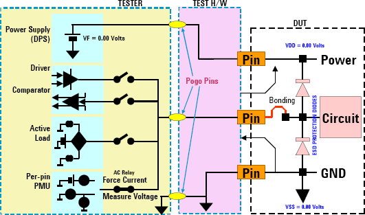

DC continuity test for driver sharing
The continuity test is a commonly used test within the DC test group. It is one of the fundamental tests that verifies whether or not the signal pins are connected to the channels or if the connected pin is shorted to ground. Driver sharing requires a continuity test which differs from non-shared driver environment.
Every device has built-in ESD protection diodes with known characteristics. These diodes can be used to perform the continuity tests. The voltage can be measured across these diodes by forcing current through the parametric measurement unit (PMU) as illustrated in the following figure.

In driver sharing environment, several silicon resistors are parallel linked:
- The measurement result will be different from non-sharing environment even if all sites are good.
- If one site is faulty, the measurement results of all sites may be affected.
In daisy chain sharing, external termination is used for shared inputs. The voltage source used to supply the termination voltage greatly changes the test condition.
Therefore, standard DC test functions are not suitable for driver sharing. Advantest supplies test methods that perform continuity tests for driver sharing.